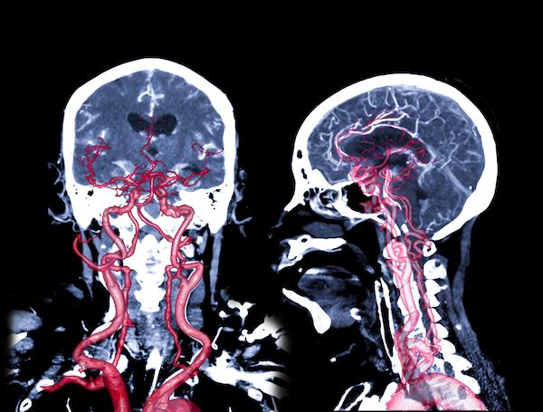
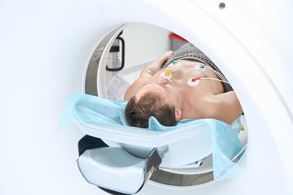

Computed tomography angiography is often called CTA or CT angiography. It is a special type of scan that takes pictures of your blood vessels and organs using X-rays and a computer.
This test helps your care team see if your blood vessels are blocked, narrow, or have other problems. CTA is often used to check the heart, brain, lungs, kidneys, or legs.

Your care team may order a CTA to:
Check for blood clots or blockages in your arteries
Look for weak spots, called aneurysms, in blood vessels
Help plan surgery or other treatments
Check how well blood is flowing in certain parts of your body
Help find the cause of chest pain, stroke, or other symptoms
CTA is safe for most people. Still, there are a few things to know:
You may get an allergic reaction to the contrast dye used in the test.
The dye can affect the kidneys, especially if you already have kidney disease.
You are exposed to a small amount of radiation, but it is low and brief.
Your care team will make sure the test is safe for you.
Tell your care team or the person scheduling your test if:
You have kidney problems.
You are allergic to contrast dye or iodine.
You are pregnant or think you may be.
You have asthma or other breathing problems.
You have diabetes and take metformin or similar medicine.
These things might change how the test is done or if it is right for you.
You may be asked not to eat or drink for a few hours before the test.
You may need to remove jewelry or metal objects.
You might be asked to change into a gown.
You will lie on a table that slides into a donut-shaped machine.
A care team member may place an IV, a small tube in your vein, to give you contrast dye.
The machine will take pictures while you lie still.
You may be asked to hold your breath for a few seconds while pictures are taken.
The test takes about 15 to 30 minutes.

You can usually go home or back to your normal routine.
Drink plenty of water to help flush the dye out of your body.
Watch for any signs of an allergic reaction, such as rash, itching, or swelling.
Your care team will tell you if you need to stop or restart any medicines.
Make sure to come to your CTA appointment on time.
Bring a list of your current medicines.
Ask when and how you will get your test results.
Follow up with your care team to talk about what the results mean and what comes next.
Your care team will use the CTA results to:
See if your blood vessels are open or blocked
Find weak areas in your arteries
Help decide if you need more tests or treatments
Your care team will explain the results in plain language and what they mean for your care.
Call your care team if:
You have bleeding at the site where the IV tube was placed that does not stop after pressing on it for a few minutes.
You have redness, swelling, or warmth where the IV tube was placed, which could mean infection.
You have a firm, painful lump or bump near where the IV tube went in.
You have a fever of 100.4°F or 38°C or higher, or chills.
You have new or worsening pain at the site where the IV tube was placed.
The arm or leg where the IV tube was placed feels cold, looks pale, or feels different from your other arm or leg.
You have any questions or concerns about how you are feeling after your test.
Get help right away if:
You have severe or sudden chest pain or trouble breathing.
You have uncontrolled bleeding where the IV tube was placed that does not stop with pressure.
You pass out or feel very dizzy.
You have sudden weakness, numbness, or trouble moving your arm or leg.
You have signs of a serious allergic reaction, including trouble breathing, a rash with swelling, or swelling of your face, mouth, throat, or tongue.
You have a sudden, severe headache, confusion, or trouble speaking, which are signs of a possible stroke.
You have no urine or very little urine for 8 hours, or your urine is very dark. These are signs of a possible kidney problem from the contrast dye.
Thank you for trusting us with your care. We are here to support you and want you to feel your best. Contact us with any questions.
IF YOU HAVE A MEDICAL EMERGENCY, CALL 911 OR GO TO THE EMERGENCY ROOM.
The information presented is intended for general information and educational purposes. It is not intended to replace the advice of your health care provider. Contact your health care provider if you believe you have a health problem.
Last updated May 2025
© 2025 Mytonomy, Inc. All rights reserved.